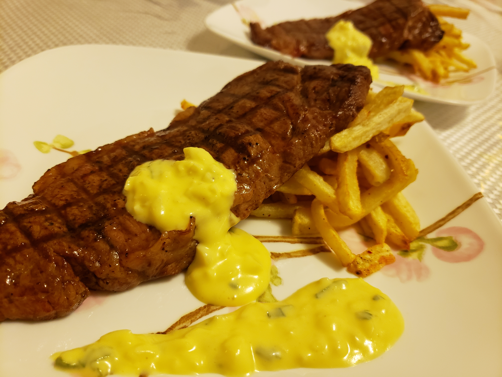
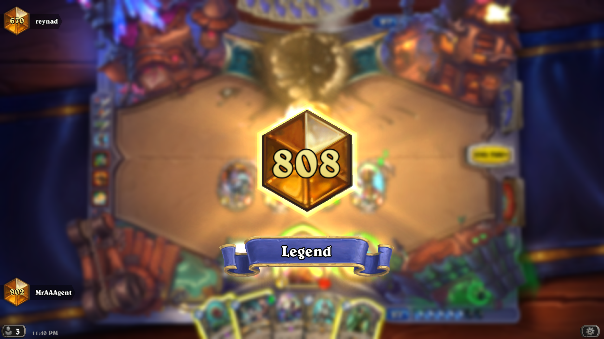
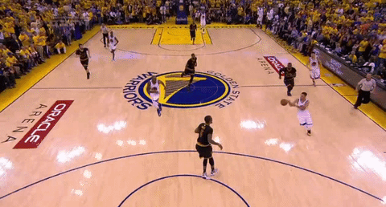

COOKING
If you see my physique, you can tell that I like food. :P And I like being an idiot sandwich in my spare time. I think I've spent WAY too long watching Gordon Ramsay videos in my spare time...to the left is a picture of the time I made sweet and sour spare ribs and if you note the lack of veggies, uh, mom, I promise I'm eating my fruits and veggies at university.CARD GAMES
Guess what my yearbook quote was.."My grandpa's deck has no pathetic cards Kaiba. But it does contain... the unstoppable EXODIA!" So yea Yu-Gi-Oh's played a large part of my childhood. Other card games I've played are stuff like Hearthstone (I've reached top 100 legend rank before); the image to the right is a screenshot of me beating my favourite Hearthstone streamer reynad. Card games have always played a large part of my life, I've learned to believe in the "heart of the cards" and manifest my destiny to reality.


BASKETBALL
That's me on the right over there...getting blocked :( I enjoy playing basketball in my free time, but I don't know about my skills tho...I participated in basketball intramurals at school and all i can say is at least WE GOT A WIN! Besides crossing people on the court, I closely follow the NBA and my favourite player is LeBron James. Not only on the court, but off the court, LeBron's my inspiration.ANIME
The animation in anime has always mesmerized me, where each frame is drawn out by someone and how so much effort is put into every sequence of events as compared to the traditional form of television where people act on a set. Maybe it's the sensation that it returns me back to my childhood like I'm watching cartoons on a Saturday morning; regardless, I've fallen for this form of media.